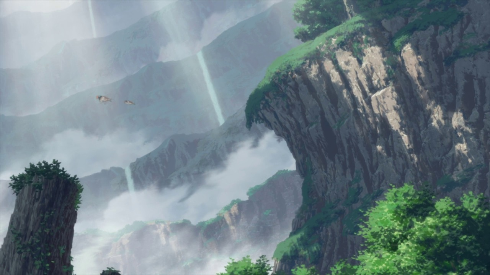

Made in Abyss - Capas
Capa 1
Información general
Datos conocidos de la capa:
El Borde del abismo es la primera capa del Abismo. Su composición es bastante suave en comparación con los niveles más profundos y extraños. La primera capa es la única parte del abismo que podría considerarse, de alguna manera, "segura".
Personajes más relevantes:
Jiruo

Reg

Riko